Günün Kokpiti
Son Seans kontrol ediliyor...
🏋️ Salon Antrenman Modu
Sürtünmesiz İcraatHafta 1 Full Body Adaptasyon, Hafta 2 Upper/Lower Split ve Hafta 3 Konsolidasyon seansları.
Hafta 1 — Gün 1 (Full Body A)
Nöromüsküler Adaptasyon & Servikal/Aşil Başlangıcı
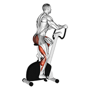
💡 Biyomekanik Neden & Güvenlik Kılavuzu (Genişlet)
Genel vücut ısısını artırır, aşil tendonunu kompresyona sokmadan synovial sıvıyı ısıtır.
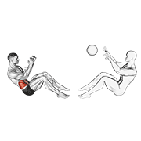
💡 Biyomekanik Neden & Güvenlik Kılavuzu (Genişlet)
Omuz ve kalça eklem kapsüllerini antrenmana hazırlar, sakatlık riskini düşürür.
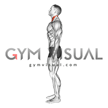
💡 Biyomekanik Neden & Güvenlik Kılavuzu (Genişlet)
Derin servikal fleksörleri (longus colli/capitis) uyararak servikal lordoz düzleşmesini rehabilite eder.
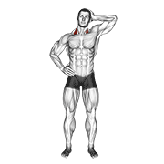
💡 Biyomekanik Neden & Güvenlik Kılavuzu (Genişlet)
Boyun yan stabilizatörlerini fıtıklı diski sıkıştırmadan izometrik olarak güçlendirir.
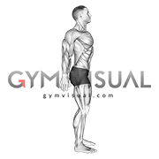
💡 Biyomekanik Neden & Güvenlik Kılavuzu (Genişlet)
Rhomboid ve orta trap aktivasyonu ile sol kürek kemiğindeki kulunçları deaktive eder.
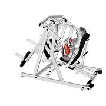
💡 Biyomekanik Neden & Güvenlik Kılavuzu (Genişlet)
Omurgaya hiçbir eksenel (aksiyel) dikey yük bindirmeden bacak kuvveti ve hormonel uyarım sağlar.
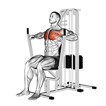
💡 Biyomekanik Neden & Güvenlik Kılavuzu (Genişlet)
Serbest ağırlığa kıyasla sabit rotada güvenli pektoral hipertrofi ve omuz stabilitesi.
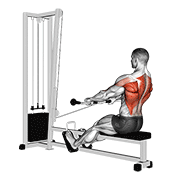
💡 Biyomekanik Neden & Güvenlik Kılavuzu (Genişlet)
Sırt kaslarını kalınlaştırarak öne yuvarlanan omuzları (text neck) düzeltir.

💡 Biyomekanik Neden & Güvenlik Kılavuzu (Genişlet)
Latissimus dorsi kasını çalıştırarak omurgaya dekompresyon ve askı desteği verir.
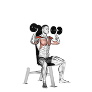
💡 Biyomekanik Neden & Güvenlik Kılavuzu (Genişlet)
Oturur pozisyonda bel korunarak omuz kuvvet dengesizliği kapatılır.
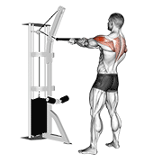
💡 Biyomekanik Neden & Güvenlik Kılavuzu (Genişlet)
Rotator cuff dış rotatörleri ve arka omuzu güçlendirerek boyun ağrılarını hafifletir.
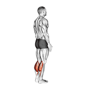
💡 Biyomekanik Neden & Güvenlik Kılavuzu (Genişlet)
Aşil tendonunun reaktif fazında kollajen liflerine kontrollü gerim vererek iyileşmeyi tetikler.
💡 Biyomekanik Neden & Güvenlik Kılavuzu (Genişlet)
Kalp atımını normale düşürür ve laktat birikimini dağıtır.
Hafta 1 — Gün 2 (Full Body B)
Unilateral Denge & Hamstring/Göğüs İvmesi
💡 Biyomekanik Neden & Güvenlik Kılavuzu (Genişlet)
Her seansta omurga stabilitesini garanti altına alan zorunlu koruma kalkanı.
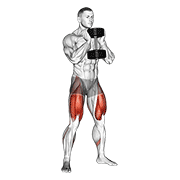
💡 Biyomekanik Neden & Güvenlik Kılavuzu (Genişlet)
Aksiyel omurga yükü olmadan bacak ve gluteus hipertrofisi.

💡 Biyomekanik Neden & Güvenlik Kılavuzu (Genişlet)
Klavikular (üst) göğüs liflerini geliştirerek omuz kuşağını dengeler.
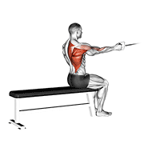
💡 Biyomekanik Neden & Güvenlik Kılavuzu (Genişlet)
Sol skapuladaki nöral inhibisyonu kırar ve iki taraf arasındaki kuvvet farkını eşitler.

💡 Biyomekanik Neden & Güvenlik Kılavuzu (Genişlet)
Hamstring kuvveti kuadriseps dominansını kırar ve diz eklemini korur.
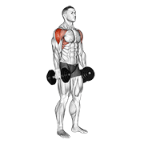
💡 Biyomekanik Neden & Güvenlik Kılavuzu (Genişlet)
Lateral deltoid izolasyonu ile omuz genişliğini artırır.
💡 Biyomekanik Neden & Güvenlik Kılavuzu (Genişlet)
Sürekli oturma ve masa başı text neck postürünü düzeltir.
💡 Biyomekanik Neden & Güvenlik Kılavuzu (Genişlet)
Tendon elastikiyetini artırır ve gün sonu ağrısını önler.
Hafta 1 — Gün 3 (Full Body A+)
Ağırlık Artışı & Progresif Konsolidasyon
💡 Biyomekanik Neden & Güvenlik Kılavuzu (Genişlet)
Progresif yüklenme prensibi ile kas fibrillerine ilk haftada artan direnç adaptasyonu sağlanır.
Opsiyonel Gün 4 — Full Body Recovery
Aktif Toparlanma & Doku Kanlanması
💡 Biyomekanik Neden & Güvenlik Kılavuzu (Genişlet)
Kan dolaşımını artırarak doku onarımını hızlandırır.
💡 Biyomekanik Neden & Güvenlik Kılavuzu (Genişlet)
Bacak kaslarına kan pompalayarak toparlanmayı hızlandırır.
💡 Biyomekanik Neden & Güvenlik Kılavuzu (Genişlet)
Pektoral kaslarda mikrosirkülasyon.
💡 Biyomekanik Neden & Güvenlik Kılavuzu (Genişlet)
Skapular kanlanma ve gevşeme.
💡 Biyomekanik Neden & Güvenlik Kılavuzu (Genişlet)
Omurga traksiyonu.
💡 Biyomekanik Neden & Güvenlik Kılavuzu (Genişlet)
Miyofasiyal gerginlikleri çözer.
💡 Biyomekanik Neden & Güvenlik Kılavuzu (Genişlet)
Postüral dayanıklılık.
💡 Biyomekanik Neden & Güvenlik Kılavuzu (Genişlet)
Tendon dinlenmesini aktif tutar.
Hafta 2 — Gün 4 (Upper Body A)
Üst Gövde Kuvveti & Sol Skapula İzolasyonu
💡 Biyomekanik Neden & Güvenlik Kılavuzu (Genişlet)
Üst gövde antrenmanı öncesi boyun omurlarını kilitler.
💡 Biyomekanik Neden & Güvenlik Kılavuzu (Genişlet)
Pektoral hipertrofi.
💡 Biyomekanik Neden & Güvenlik Kılavuzu (Genişlet)
Orta sırt gücü.
💡 Biyomekanik Neden & Güvenlik Kılavuzu (Genişlet)
Latissimus dorsi alt lifleri ve biseps desteği.
💡 Biyomekanik Neden & Güvenlik Kılavuzu (Genişlet)
Sol skapular kulunçları çözmek ve kuvvet açığını kapatmak için altın standart.
💡 Biyomekanik Neden & Güvenlik Kılavuzu (Genişlet)
Dış rotatör kuvveti.
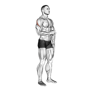
💡 Biyomekanik Neden & Güvenlik Kılavuzu (Genişlet)
Infraspinatus ve teres minor (rotator cuff) spesifik güçlendirme.
💡 Biyomekanik Neden & Güvenlik Kılavuzu (Genişlet)
Günlük tendon yüklemesi.
Hafta 2 — Gün 5 (Lower Body + Aşil Rehab)
Alt Gövde Kuvveti & Eksantrik Heel Drop Girişi
💡 Biyomekanik Neden & Güvenlik Kılavuzu (Genişlet)
Omurga güvenliği.
💡 Biyomekanik Neden & Güvenlik Kılavuzu (Genişlet)
Maksimal bacak kuvvet inşası.
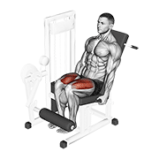
💡 Biyomekanik Neden & Güvenlik Kılavuzu (Genişlet)
Diz kapağı (patellar) tendon ve kuadriseps adaptasyonu.
💡 Biyomekanik Neden & Güvenlik Kılavuzu (Genişlet)
Arka bacak kuvvet dengesi.
💡 Biyomekanik Neden & Güvenlik Kılavuzu (Genişlet)
Tendon kalınlaşması ve mikroyırtık onarımı için eksantrik gerilim.
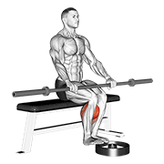
💡 Biyomekanik Neden & Güvenlik Kılavuzu (Genişlet)
Soleus kası aşil tendinitinde ana yük emicidir.
💡 Biyomekanik Neden & Güvenlik Kılavuzu (Genişlet)
Alfredson protokolünün altın standardı; tendinopatiyi iyileştiren ana eksantrik egzersiz.
Hafta 2 — Gün 6 (Upper Body B)
Göğüs Genişliği & Sırt Simetrisi
💡 Biyomekanik Neden & Güvenlik Kılavuzu (Genişlet)
Servikal koruma.
💡 Biyomekanik Neden & Güvenlik Kılavuzu (Genişlet)
Üst göğüs hipertrofisi.
💡 Biyomekanik Neden & Güvenlik Kılavuzu (Genişlet)
Sırt V-şekli ve skapular depresyon.
💡 Biyomekanik Neden & Güvenlik Kılavuzu (Genişlet)
Tek taraflı kuvvet dengelemesi.
💡 Biyomekanik Neden & Güvenlik Kılavuzu (Genişlet)
Pektoral iç lifler ve omuz adduksiyonu.
💡 Biyomekanik Neden & Güvenlik Kılavuzu (Genişlet)
Omuz genişliği.
💡 Biyomekanik Neden & Güvenlik Kılavuzu (Genişlet)
Tam skapular rehabilitasyon kombinasyonu.
💡 Biyomekanik Neden & Güvenlik Kılavuzu (Genişlet)
Tendon beslenmesi.
Hafta 2 — Gün 7 (Lower Body B)
Bacak Kuvveti & Eksantrik Aşil Yüklemesi
💡 Biyomekanik Neden & Güvenlik Kılavuzu (Genişlet)
Omurga koruma.
💡 Biyomekanik Neden & Güvenlik Kılavuzu (Genişlet)
Bacak kuvveti.
💡 Biyomekanik Neden & Güvenlik Kılavuzu (Genişlet)
Vastus lateralis (dış bacak) odağı.
💡 Biyomekanik Neden & Güvenlik Kılavuzu (Genişlet)
Ön bacak izolasyonu.
💡 Biyomekanik Neden & Güvenlik Kılavuzu (Genişlet)
Diz arkası koruması.
💡 Biyomekanik Neden & Güvenlik Kılavuzu (Genişlet)
Tendon kuvveti.
💡 Biyomekanik Neden & Güvenlik Kılavuzu (Genişlet)
Tendon yeniden modellenmesi.
Hafta 3: Konsolidasyon Protokolü
Hafta 3, 15 günlük salon kampının son haftasıdır. Hafta 2 Upper/Lower split yapısı (Gün 4, 5, 6, 7) aynen uygulanır.
📊 Seans Kaydı & Gerçek Veri Geçmişi
Klinik İzlemeTamamlanan setler, sabah aşil skoru ve vücut ağrı takibi. Sadece gerçek verileriniz grafiklendirilir.
✍️ Seansı Kaydet
📈 Boyun & Kol Ağrısı Trendi (VAS)
Klinik Trend🦶 Sabah İlk Adım Aşil Ağrısı (0-10)
Reaktif Faz Takibi⚖️ Sol / Sağ Kuvvet Dağılım Oranı (Gerçek Veri)
📜 Seans Geçmişi
| Tarih | Faz / Gün | Süre | Boyun | Aşil | Egzersizler & Kilolar | Notlar | İşlem |
|---|
⏳ Zaman Çizelgesi & Dönemler
Periodizasyon14 Ekim 2026 Çarşamba başlayan 4 fazlı adaptasyon ve kuvvet inşası zaman yolculuğu.
Salon Kampı
15 gün salon hakkı (16 takvim günü). 3-4 gün/hf × 60 dk. Nöromüsküler uyanış, hareket kalıbı, aşil izometrik yükleme, servikal rutin.
Toparlanma Günleri
3 gün: Salon programı tanımsızdır. Hafif yolculuk band rutini, aktif dinlenme ve yol hazırlığı önerilir.
Yolculuk / Otel
8 gün: Otel odası / seyahat modu. 25-30 dk band ve vücut ağırlığı rutini. Boyun dekompresyonu, aşil koruması.
Ev & Sezon İçi
Ev dönemi (ayarlanabilir dumbbell) ve 2 Aralık'tan itibaren resepsiyon sezonu mikro-rehabilitasyonu.
🥗 Beslenme & Hidrasyon Planı
Beslenme KılavuzuEtsiz beslenen kullanıcı için 130-150g protein hedefleri, HCT %51.5 için 3.5-4L hidrasyon ve anti-inflamatuar gıda protokolü.
Günlük Makro Hedefleri
| Makro | Hedef | Not |
|---|---|---|
| Kalori | ~2000-2200 kcal | Hafif kalori açığı (yağ yakımı), kas dokusunu koruma |
| Protein | 130-150g / gün | 1.5-1.6g/kg (Etsiz beslenme için titiz planlama şart) |
| Karbonhidrat | 200-250g / gün | Antrenman günleri üst sınır, dinlenme günleri alt sınır |
| Yağ | 60-75g / gün | Zeytinyağı, ceviz, badem, avokado (sağlıklı yağlar) |
| Su | 3.5-4.0 L / gün | HCT %51.5 + kreatin kullanımı nedeniyle zorunlu hidrasyon |
| Lif | 25-30g / gün | Mercimek, nohut, sebze, yulaf ve tam tahıllar |
Etsiz Protein Kaynakları (Dağılım)
| Kaynak | Porsiyon | Protein | Klinik Not |
|---|---|---|---|
| Yumurta (Tam + Beyaz) | 4-5 adet / gün | 24-30g | Etsiz planlama |
| Süzme Peynir / Lor | 200g / gün | 22-28g | Etsiz planlama |
| Yoğurt (Sade) | 300g / gün | 10-12g | Etsiz planlama |
| Mercimek (Pişmiş) | 200g / gün | 18g | Etsiz planlama |
| Nohut (Pişmiş) | 150g / gün | 12g | Etsiz planlama |
| Whey Protein Tozu | 1-2 scoop / gün | 25-50g | Etsiz planlama |
| Kuruyemiş (Ceviz/Badem) | 50g / gün | 10g | Etsiz planlama |
| GÜNLÜK TOPLAM | Planlı Kombinasyon | ~130-150g | Etsiz planlama |
Örnek 2 Öğün Beslenme Düzeni
💊 Takviye & Dozaj Protokolü
Klinik DestekD3 10.9 ng/mL şiddetli eksikliği için yükleme, magnezyum glisinat, kreatin ve melatonin sinerjisi.
| Takviye | Dozaj | Zamanlama | Klinik Gerekçe | Güvenlik / Kontrol |
|---|---|---|---|---|
| D3 Vitamini | 50.000 IU / hafta | Sabah yağlı yemekle (Pazar tek doz) | 10.9 ng/mL şiddetli eksikliği 40+ seviyesine çıkarma. | İlk 8 hafta (sonra 5.000 IU/gün) |
| K2 Vitamini (MK-7) | 200 mcg / gün | D3 ile birlikte | Kalsiyumu damarlardan kemik ve diş dokusuna yönlendirme. | Sürekli |
| Kreatin Monohidrat | 5g / gün (Yükleme yok) | Antrenman sonrası bol su ile | Kas hücresi enerji havuzu, güç artışı ve nöral koruma. | Sürekli |
| Magnezyum Glisinat | 400 mg / gün | Gece yatmadan 30 dk önce | Kas spazmlarını çözme, derin uyku ve tendon gevşemesi. | Sürekli |
| Omega-3 (EPA/DHA) | 2-3g / gün | Yemekle birlikte | Sistemik inflamasyonu baskılama ve tendon elastikiyeti. | Sürekli |
| Kolajen Tip I+III | 10-15g / gün | Antrenmandan 30-60 dk önce | Aşil tendonu ve disk anulus fibrosus onarımı. | Sürekli |
| C Vitamini | 500 mg / gün | Kolajen ile birlikte | Kolajen liflerinin çapraz bağlanması için kofaktör. | Sürekli |
| Whey Protein | 1-2 scoop / gün | Ara öğünde | Etsiz diyette günlük 130-150g protein açığını tamamlama. | Sürekli |
🛏️ Uyku & Ergonomi Kılavuzu
Disk DekompresyonuC5-6 / C6-7 foramen açıcı uyku pozisyonları ve masa başı / resepsiyon omurga ergonomisi.
Nasıl: Orta yükseklikte yastık + boyun çukuruna rulo havlu + dizlerin altına destek yastığı.
Neden: Servikal lordozu anatomik formunda tutar, disk içi hidrostatik basıncı en aza indirir.
Nasıl: Omuz genişliğinde yüksek yastık (baş düşmemeli) + bacaklar arasına yastık.
Neden: Sol taraftaki C5-6 ve C6-7 fıtıklarının üzerindeki yerçekimi basısını hafifletir.
Nasıl: Derhal terk edilmelidir. Yanlara yastık barikatı kurarak engellenmelidir.
Neden: Boyun 6-8 saat boyunca 90° maksimum rotasyonda kalır; fıtık baskısını %40-60 artırır!
✈️ Yolculuk / Otel Odası Programı (Faz 2)
2-9 Kasım 20268 gün boyunca otel odasında direnç bandı ve vücut ağırlığıyla 25-30 dakikalık mikro-rehab.
| Egzersiz | Set × Tekrar | Tempo | Uygulama Notu |
|---|---|---|---|
| [Sabah] 1. Chin Tuck (Duvara/Yatağa) | 3 × 10 | 2 dk | Sabah mikro-rehab |
| [Sabah] 2. İzometrik Boyun (4 Yön) | 2 × 8 | 2 dk | Sabah mikro-rehab |
| [Sabah] 3. Band Pull-Apart | 3 × 15 | 2 dk | Sabah mikro-rehab |
| [Sabah] 4. Skapular Retraksiyon | 3 × 12 | 1 dk | Sabah mikro-rehab |
| [Sabah] 5. Wall Slide | 2 × 10 | 1 dk | Sabah mikro-rehab |
| [Sabah] 6. Prone Y-Raise (Yatakta) | 2 × 10 | 2 dk | Sabah mikro-rehab |
| [Akşam] 1. Çift Ayak Calf Raise | 3 × 15 | 2 dk | Akşam dekompresyon |
| [Akşam] 2. Eksantrik Heel Drop (Basamak) | 2 × 10 | 2 dk | Akşam dekompresyon |
| [Akşam] 3. Bant ile Dorsifleksiyon | 2 × 15 | 1 dk | Akşam dekompresyon |
| [Akşam] 4. Hafif Gövde Rotasyonu | 2 × 10 | 1 dk | Akşam dekompresyon |
| [Akşam] 5. Hamstring Stretching | 2 × 30 sn | 1 dk | Akşam dekompresyon |
| [Akşam] 6. Göğüs Kapı Stretching | 2 × 30 sn | 1 dk | Akşam dekompresyon |
| [Akşam] 7. Aşil Duvar Stretching | 2 × 30 sn | 1 dk | Akşam dekompresyon |
🏠 Ev Programı (Faz 3)
10 Kasım - 2 AralıkAyarlanabilir dambıl ve kapı barfiksi / band ile 3-4 gün/hf Upper/Lower split.
Upper Day (Üst Gövde)
| Egzersiz | Set × Tkr | Tempo | Detay |
|---|---|---|---|
| 1. Servikal Blok | 1 × 8 dk | Kontrollü | Vücut ağırlığı |
| 2. Band Pull-Apart | 3 × 15 | Kontrollü | Direnç bandı |
| 3. DB Floor Press | 3 × 12 | Kontrollü | Ayarlanabilir dambıl |
| 4. Single Arm DB Row | 3 × 10-12 her taraf | Kontrollü | Dambıl (Sol ilk) |
| 5. Band Lat Pulldown (Kapı üstü) | 3 × 12 | Kontrollü | Kapı askılı bant |
| 6. DB Lateral Raise | 3 × 12-15 | Kontrollü | Hafif dambıl |
| 7. Face Pull (Bant) | 3 × 15 | Kontrollü | Direnç bandı |
| 8. DB External Rotation | 2 × 15 | Kontrollü | 1-2 kg dambıl |
| 9. Aşil Bloğu | 1 × 5 dk | Kontrollü | Düz zemin |
Lower Day (Alt Gövde)
| Egzersiz | Set × Tkr | Tempo | Detay |
|---|---|---|---|
| 1. Servikal Blok | 1 × 8 dk | Kontrollü | Vücut ağırlığı |
| 2. Goblet Squat | 3 × 12-15 | Kontrollü | Dambıl |
| 3. DB Romanian Deadlift | 3 × 12 | Kontrollü | Dambıl (Hafif-orta) |
| 4. DB Lunge (Geriye Adım) | 3 × 10 her bacak | Kontrollü | Dambıl |
| 5. Glute Bridge (Yerde) | 3 × 15 | Kontrollü | Vücut ağırlığı |
| 6. Single Leg Calf Raise | 3 × 15 her bacak | Kontrollü | Vücut ağırlığı |
| 7. Eksantrik Heel Drop | 3 × 10 | Kontrollü | Basamak |
| 8. Bant Dorsifleksiyon | 2 × 15 | Kontrollü | Direnç bandı |
🛎️ Sezon İçi / Resepsiyon Koruma (Faz 4)
2 Aralık SonrasıMasa başı uzun oturma ve gece vardiyalarında omurga ve aşil mikrodolaşımını koruyan mini seanslar.
| Protokol | Sıklık | Uygulama & Biyomekanik Amaç |
|---|---|---|
| Chin Tuck (Gözler Ekranda) | 5 tekrar | 30 sn |
| Skapular Retraksiyon | 10 tekrar | 30 sn |
| Omuz Daireleri | 10 ileri + 10 geri | 30 sn |
| Ayağa Kalk + Kısa Yürüyüş | Ofis içi hareket | 1-2 dk |
| Kapı / Duvar Göğüs Esnetme | 2 × 20 sn | 40 sn |
🛒 Alışveriş & Bütçe Listesi
Ekipman ve TakviyeKritik öncelik sırasına göre ev ve seyahat ekipmanları ile takviye tedarik maliyetleri.
Ekipman Listesi
| Ekipman | Tahmini Fiyat | Öncelik | Gerekçe |
|---|---|---|---|
| Direnç Bandı Seti (5'li) | ~200-350 ₺ | 🔴 ZORUNLU | Skapula, rotator cuff, aşil ve boyun izometrisi |
| Yoga Matı (6-8 mm) | ~150-250 ₺ | 🔴 ZORUNLU | Yer egzersizleri ve zemin izolasyonu |
| Masaj Topu (Lacrosse / Sert) | ~100-150 ₺ | 🟡 ÖNEMLİ | Sol kürek kemiği kulunçlarını çözme |
| Ayarlanabilir Dambıl (2-10 kg) | ~800-1500 ₺ | 🟡 ÖNEMLİ | Unilateral sol kol ve ev spliti |
| Kapı Barfiks Çubuğu | ~200-400 ₺ | 🟢 OLSA İYİ | Omurga asılma (dekompresyon) |
| Foam Roller | ~150-300 ₺ | 🟢 OLSA İYİ | Torakal omurga mobilitesi |
| MİNİMUM BÜTÇE TOPLAMI | ~450-750 ₺ | BAŞLANGIÇ | Bant + Mat + Masaj Topu |
| İDEAL BÜTÇE TOPLAMI | ~1500-2500 ₺ | TAM DONANIM | + Dambıl ve Barfiks |
Takviye Tedarik
| Takviye | Tahmini Fiyat | Öncelik | Detay |
|---|---|---|---|
| D3 Vitamini 50.000 IU (Kutu) | ~50-80 ₺ | Öncelikli | Günlük protokol takviyesi |
| K2 Vitamini (MK-7) | ~100-150 ₺ | Öncelikli | Günlük protokol takviyesi |
| Magnezyum Glisinat (400 mg) | ~100-200 ₺ | Öncelikli | Günlük protokol takviyesi |
| Omega-3 Balık Yağı (Yüksek EPA/DHA) | ~150-250 ₺ | Öncelikli | Günlük protokol takviyesi |
| Kolajen Toz (Tip I + III) | ~200-350 ₺ | Öncelikli | Günlük protokol takviyesi |
| C Vitamini (500 mg) | ~30-50 ₺ | Öncelikli | Günlük protokol takviyesi |
🛡️ Tıbbi Durum & Bilgilendirme Çerçevesi
Bu platform, kişisel antrenman ve rehabilitasyon sürecini kolaylaştırmak amacıyla hazırlanmış bir AI destekli takip kokpitidir. Tıbbi tanı, hekim konsültasyonu veya reçete yerine geçmez.
⚠️ Sol kolda ani güç kaybı, elden eşya düşürme veya yaygın hissizlik durumlarında antrenman derhal durdurulmalı ve nöroloji uzmanına başvurulmalıdır.
🧠 Servikal Fıtık Koruma Protokolü
C5-6 & C6-7Lordoz düzleşmesi ve disk basısını dekomprese eden zorunlu hareketler ve fıtıkta kesin yasak hareketler.
| # | Egzersiz | Set × Tekrar | Tutuş | Uygulama Detayı | Güvenlik Kriteri |
|---|---|---|---|---|---|
| 1 | Chin Tuck (Çene İçe) | 3 × 10 | 5 sn | Duvara sırt dayalı. Çene içeri (çift çene). Baş duvardan ayrılmaz. | Ağrı olursa dur. Lordoz kaybı için en kritik egzersiz. |
| 2 | İzometrik Fleksiyon | 2 × 8 | 5 sn | El alna, başı öne itmeye çalış ama elle engelle. Hareket YOK, sadece kasılma. %50 güç. | Asla başı öne eğme. |
| 3 | İzometrik Ekstansiyon | 2 × 8 | 5 sn | El enseye, başı arkaya itmeye çalış ama engelle. %50 güç. | Hafif baskı, zorlama yok. |
| 4 | İzometrik Lateral (Sağ) | 2 × 8 | 5 sn | Sağ el sağ şakak, %70 güç. | Sağ taraf daha güçlü baskı alabilir. |
| 5 | İzometrik Lateral (Sol) | 2 × 8 | 5 sn | Sol el sol şakak, %50 güç (fıtık koruması). | Sol tarafta ağrı olursa %30'a düşür. |
| 6 | Skapular Retraksiyon | 3 × 12 | 3 sn | Ayakta, kollar yanda. Kürek kemiklerini sık (kalem sıkıştırma). Omuzlar aşağı. | Omuzları yukarı kaldırma! |
| 7 | Prone Y-Raise (Yüzüstü Y) | 2 × 10 | 2 sn | Yüzüstü yere yat, kollar Y pozisyonunda, başparmaklar tavana. Kolları 5-10 cm kaldır. | Boyun nötr, yere bak. |
🚫 Yasaklı Boyun Hareketleri (Disk Basısını Artıranlar)
🦶 Aşil Tendon Ağrı Eşiği Kuralı
Alfredson ModeliReaktif faz yönetimi, sabah ilk adım yanması takibi ve 4 fazlı progresif tendon yükleme şeması.
| Faz | Zaman | Hedef Ağrı | Egzersiz Tipi | Tempo |
|---|---|---|---|---|
| Faz 1: İzometrik | Hafta 1-2 | 0-3/10 | Çift ayak calf raise, düz zemin | 3-1-3 |
| Faz 2: Yavaş Eksantrik | Hafta 3-6 | 2-4/10 | Eksantrik heel drop (basamak), çift → tek ayak | 3-1-5 |
| Faz 3: Hızlı Eksantrik | Hafta 7-12 | 1-3/10 | Tek ayak heel drop, tempo artışı | 2-1-3 |
| Faz 4: Spora Dönüş | Hafta 12+ | 0-2/10 | Plyometrik, koşu, trekking | Değişken |
📊 24 Saatlik Ağrı Monitoring Kuralı
- 🔹 Antrenman sırasında ağrı ≤ 4/10 → Egzersize devam et.
- 🔹 Antrenman sırasında ağrı ≥ 5/10 → DERHAL DUR, seti sonlandır.
- 🔹 Ertesi sabah ağrı artışı varsa → Önceki günün yükünü %20 azalt.
- 🔹 Ertesi sabah ağrı aynı veya azalmışsa → Yük uygun, aynı tempoda devam et.
- 🔹 Sabah ilk adımda ağrı en güvenilir göstergedir → Her sabah log sistemine kaydet.
🚫 Aşil İçin Yasaklı Hareketler
💪 Sol Kol Kuvvet Asimetrisi Protokolü
Nöromüsküler DengeGarsonluk kaynaklı sol omuz kronik yüklenmesi, rotator manşet uyarımı ve 5 aşamalı dengeleme.
🎯 5 Aşamalı Dengeleme Stratejisi
- 1. Sol taraf İLK çalışılır (Taze sinir sistemi ile daha yüksek motor ünite katılımı).
- 2. Sol taraf 1-2 tekrar FAZLA yapılır (Örn: Sağ 10 tekrar ise sol 12 tekrar).
- 3. Sol ağırlık %10-15 düşük başlar (Önce form, nöral yolak ve stabilite).
- 4. Skapular stabilizasyon her seansta uygulanır (Retraksiyon, depresyon, yukarı rotasyon).
- 5. Antrenman sonrası sol kürek kemiğine 2-3 dakika masaj topu ile self-masaj uygulanır.
| Egzersiz | Set × Tekrar | Biyomekanik Detay |
|---|---|---|
| Skapular Retraksiyon | 3 × 12 | Her seansta uygulanır. Kürek kemiklerini arkada sıkıştırma. |
| Prone Y-Raise | 2 × 10 | Lower trapezius aktivasyonu ve omuz impingement önleme. |
| Prone T-Raise | 2 × 10 | Mid-trapezius ve rhomboid kuvveti. |
| Face Pull | 3 × 15 | Her seansta uygulanır. Rotator cuff ve arka deltoid. |
| DB External Rotation | 2 × 15 her taraf | 1-2 kg hafif dambıl ile rotator cuff izolasyonu. |
| Band Pull-Apart | 3 × 15 | Direnç bandı ile skapular stabilite ve göğüs açma. |
| Single Arm Cable Row | 3 × 10-12 | Sol ilk, sol taraf fazla tekrar. |
| Wall Slide | 2 × 10 | Serratus anterior aktivasyonu ile kanat skapulayı önleme. |
📜 8 Genel Antrenman Kuralı
Altın StandartlarHer seans öncesi 5-8 dk hafif bisiklet (düşük direnç, aşil için pedal ayak ortasıyla) + 2 dk dinamik stretching (kol daireleri, hafif gövde rotasyonu, ayak bileği daireleri — BOYUN ÇEVİRME KESİNLİKLE YOK).
TÜM hareketlerde boyun kesinlikle NÖTR (kulak-omuz aynı hizada). Asla başı öne eğme, arkaya atma, yana yatırma.
Unilateral hareketlerde SOL taraf İLK çalışılır, sağa göre 1-2 tekrar FAZLA yapılır ve ağırlık %10-15 düşük başlar.
Hafta 1 için RPE 5-6/10, Hafta 2 için RPE 6-7/10. Son 2 tekrarda hafif yanma olmalı, ASLA kas tükenişine (failure) gidilmez.
Büyük kas grupları 90 sn, orta kas grupları 75 sn, küçük kas grupları 60 sn, izometrik/rehab 45 sn.
Standart egzersizlerde 2-1-2 (2 sn indiriş, 1 sn bekleme, 2 sn kaldırış). Aşil egzersizlerinde 3-1-4 (yavaş eksantrik iniş).
Ağırlığı kaldırırken nefes ver, indirirken al. Asla nefesini tutma (Valsalva manevrası = disk içi basınç artışı fıtığı tetikler!).
Keskin/batıcı ağrı = DERHAL DUR. Kas yanması = devam. Boyun/kola yayılan ağrı = DUR + log'a kaydet. Aşil ağrısı ≤4/10 kabul, ≥5/10 = dur.
Haftada 3 gün ana programdır. 4. gün yapılacaksa ağırlıklar ana seansın %60-70'i olur; amaç aktif toparlanmadır, ekstra hacim değildir.
🩺 Tıbbi Profil & Laboratuvar Takibi
Klinik DeğerlerD3 eksikliği, HCT yüksekliği ve hekim kontrol takvimleri.
| Parametre | Ölçülen Değer | Klinik Yorum & Eylem |
|---|---|---|
| Boyun Fıtığı 1 | Sol C5-6 disk protrüzyonu | Radyolojik doğrulanmış |
| Boyun Fıtığı 2 | Sol C6-7 osteofitik disk hernisi | Radyolojik doğrulanmış |
| Servikal Lordoz | Kayıp (Düzleşme) | Postüral + yapısal yüklenme |
| Boyun Semptomu | Sola yatırmada kasılma (Sağ normal) | Mekanik sinir basısı |
| Sol Kol Kuvveti | Sağa göre zayıf, 4 yıl tepsi taşıma | Nöral inhibisyon + kronik overuse |
| Sol Skapula | Kulunçlar (trigger points), sızlama | Masaj şefi teyitli (levator scapulae) |
| Aşil Tendinopatisi | Reaktif faz, ilk adımlarda yanma | Warm-up effect mevcut, sabah sertliği |
| D Vitamini | 10.9 ng/mL | Şiddetli eksiklik (Hedef: 40-60 ng/mL) |
| HCT (Hematokrit) | %51.5 | Hemokonsantrasyon (3.5-4L su şart) |
| AST / ALT | 101 / 69 U/L | Kas kökenli enzim yükselmesi (GGT normal) |
| Lipid Profili | TG 76.4, HDL 69, LDL 99 | Mükemmel (TG/HDL: 1.10) |
| CRP (İnflamasyon) | 1.0 mg/L | Sıfır sistemik inflamasyon |
| Tiroid (TSH / fT4) | 1.047 uIU/mL / 1.05 ng/dL | Normal |
| Ferritin | 39.6 ng/mL | İyi (Etsiz beslenen için başarılı) |
| eGFR (Böbrek) | 78 mL/dk | Normal (Kreatin + bol su ile takip) |
| İlaç Kullanımı | Yok | Düzenli reçeteli ilaç yok |
| Sigara Kullanımı | Var | Tendon ve disk mikrodolaşımı için risk |
| Alkol Tüketimi | Yok | Karaciğer ve kas toparlanması için avantaj |